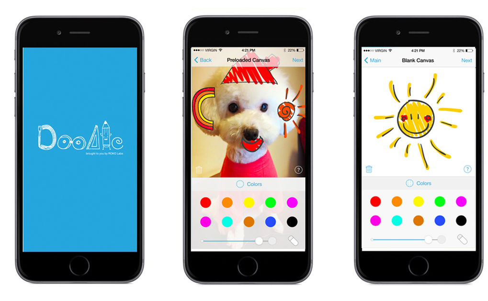
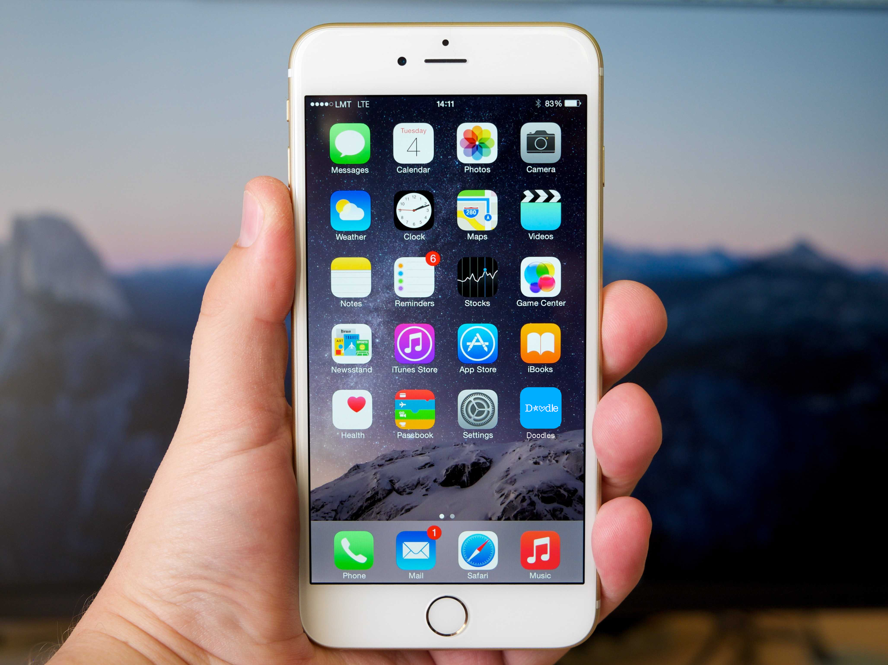
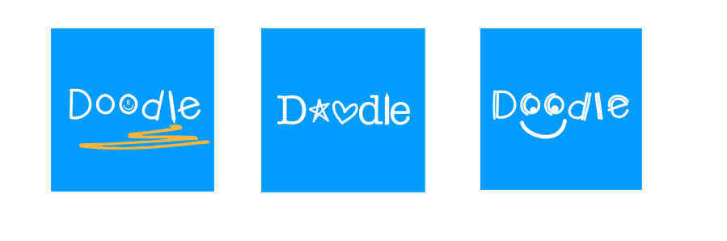

Company: Roko Labs
Project: Doodles
Role: Graphics Designer
Doodles Project was among the projects that I took part in while working at Roko Labs. The project was driven towards developing a mobile drawing application. It was a side project which I took part in. My duties on this project varied depending on the arising situation where my skills were found invaluable.
previous|next
Essential Job Duties:
- Conceptualising new ideas for Doodles project.
- Crafting and editing digital logos and other assets.
- Assisting in research and development of the company’s products profiles.
- Performing split testing (A/B testing).
- Submitting the application to the apple store.
Roko Doodles

Doodles Icon

Logo Designs
